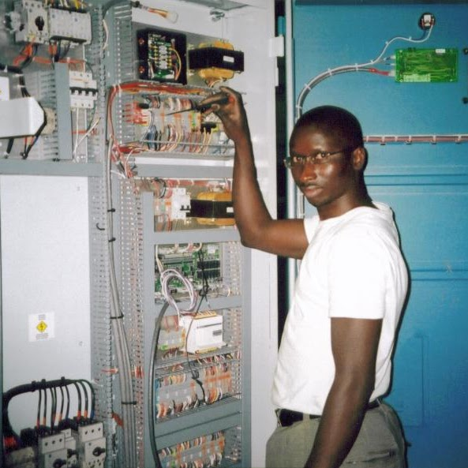

"Nickson DosSantos"
"address: Pleasant St Fall River MA, P.O. Box 5305"
"Phone: 339-707-5250"
"Email: Electronickllc@gmail.com"
"Nickson is very passionate about electronics & Networking."
"He has been working as electronics technician since 2006"
"He has been working as Cable & Network technician since 2012"
Work Experience
- "More than 7year experience as Cable Networking technician"
- More than 12 years experience as electronics technician
Education
- Mastering in Computer Science
- Bachelors Degree in Computer Science, Mathematics & Physics Minor
- Associate Degree in Electronics Engineering, electronics Technology, & General study
Technology and Tools
- Programming Languages
- Java
- python
- learning html
- learning css
- Tools
- Visual Studio code
- Eclipse
- pycharm
Skills
- electronics Repairs such as cell, Tv, PC, laptops and others
- Networking and Cable install
- Dj musics